Radovi i primeri / Čas 4
edukativna
Katarina Ušjak86/24
Čas 4
2 prikaza rada · Gradivo časa


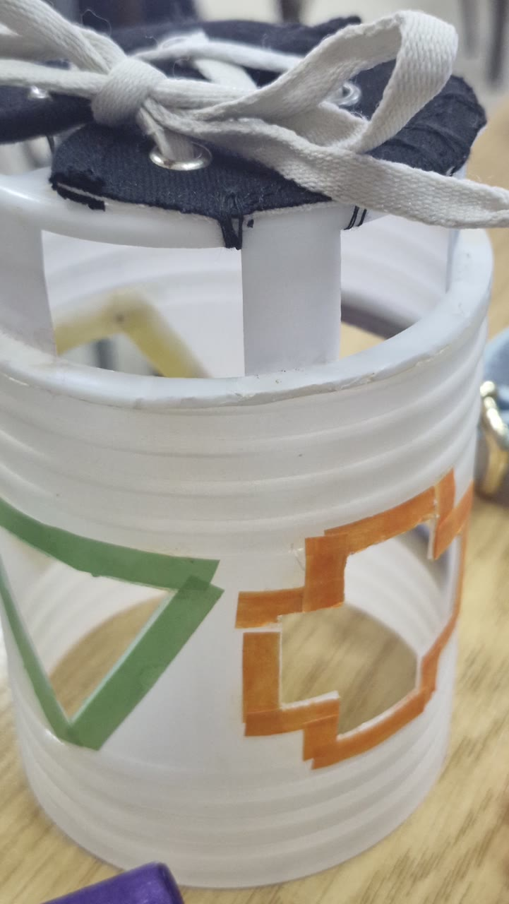
U rukama korisnika · 23.10.2026.
11 kadrova sa posete udruženju · cela poseta ↗
Najprobaniji rad posete — i rad koji se raspao na dva
ViđenoDeset od trideset jednog kadra pripada ovom radu, i to kroz najmanje tri različita korisnika (različiti rukavi: sivi, beli pleteni, crni, krem). Nijedan drugi rad nema više od osam. U kadrovima se vide dva odvojena zadatka: pertlanje poklopca i ubacivanje oblika kroz prozore na zidu. U kadru 22 poklopac je skinut i korišćen sam, bez bureta. Pertla nema zaustavnik, pa u kadrovima 18, 19, 20 i 23 bar jedan kraj visi slobodno, a poklopac stoji nakrivo. Bure je bez težine: u 19, 21 i 31 ceo predmet se drži u šaci dok druga ruka radi.
Sledeća probaVezati čvor na jednom kraju pertle i dati buretu široku ili opterećenu osnovu. Zatim probati poklopac i telo kao dva zasebna rada i izmeriti koji duže drži pažnju — kadar 22 je već pokazao da poklopac stoji sam.

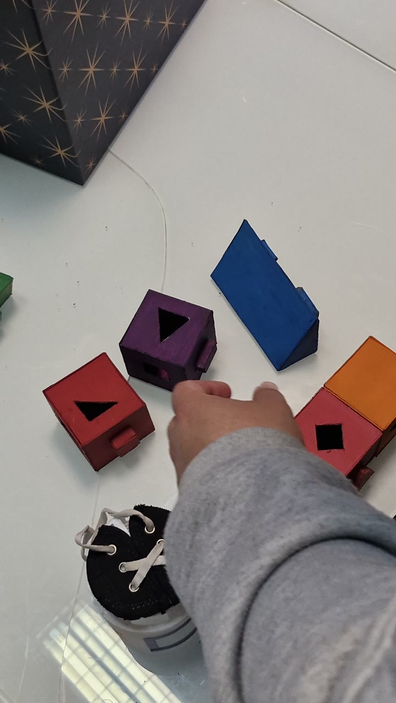

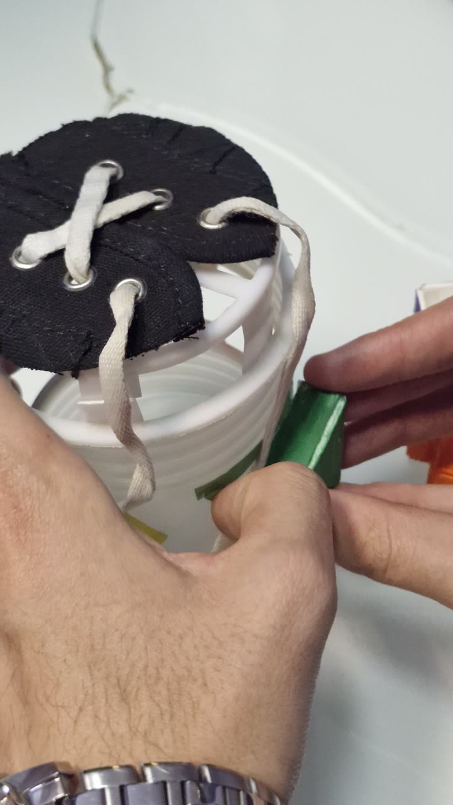

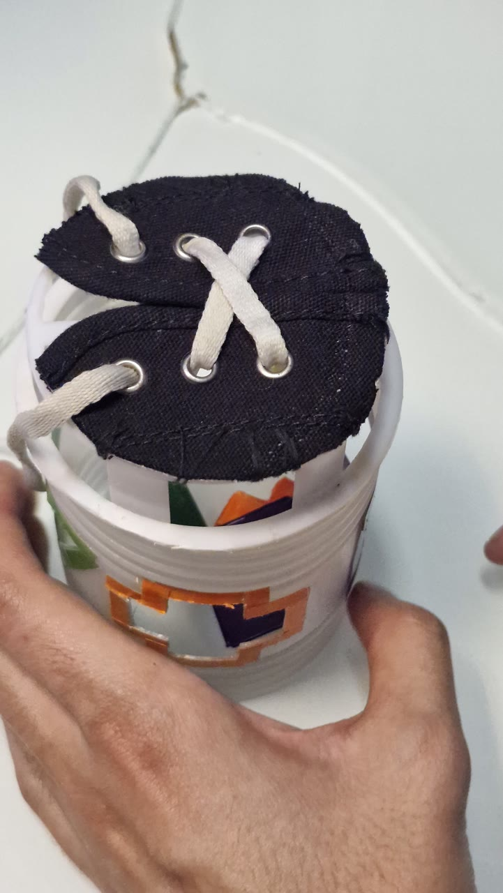

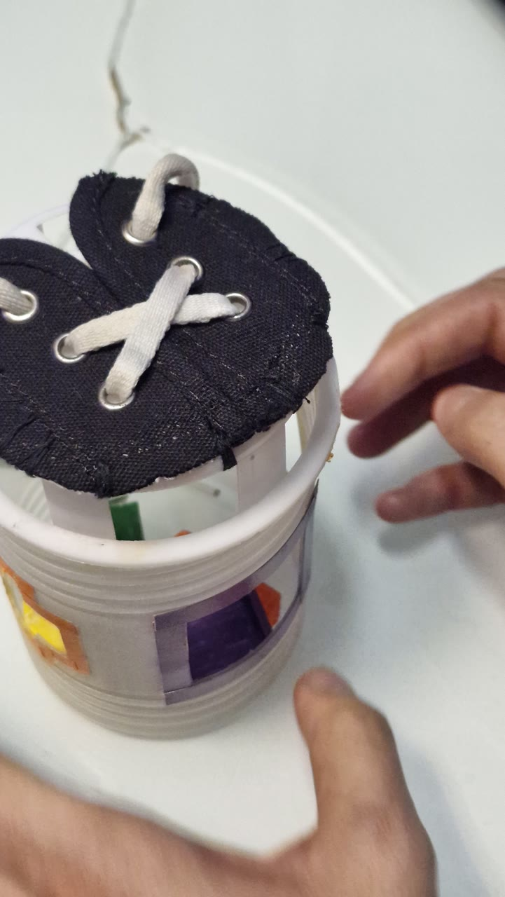

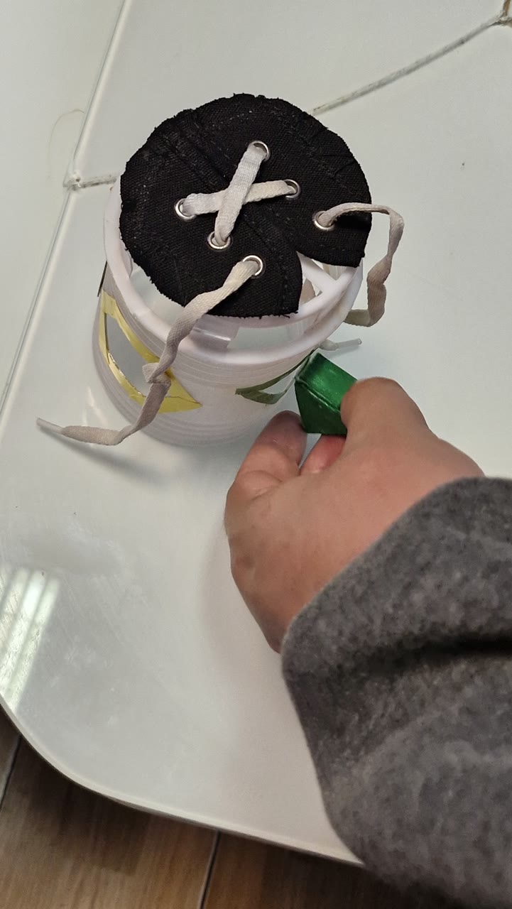

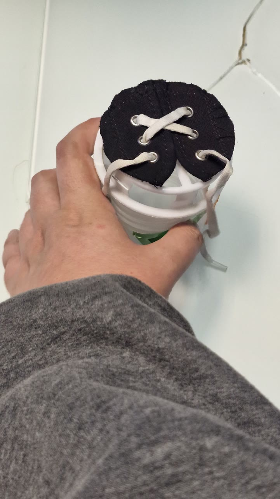

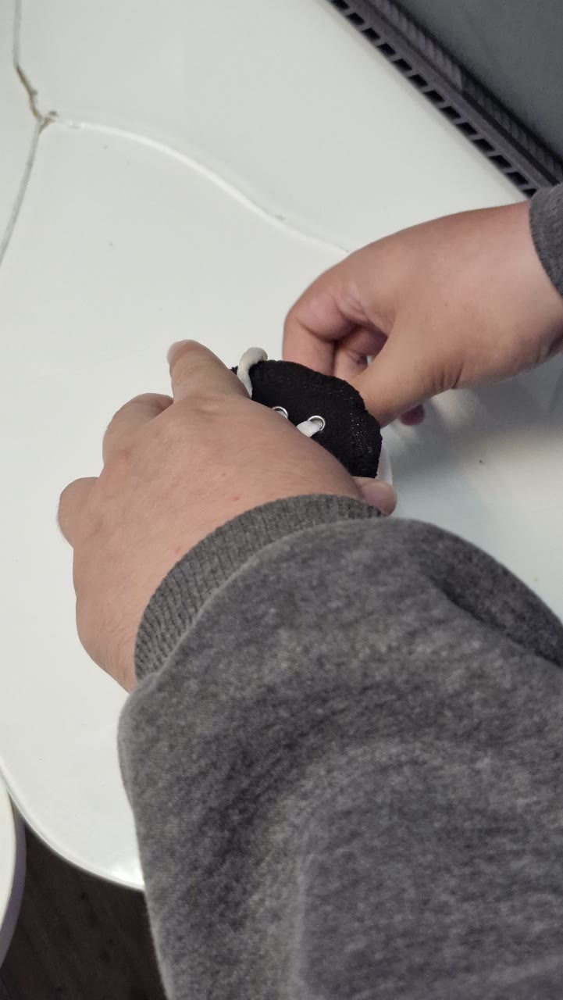

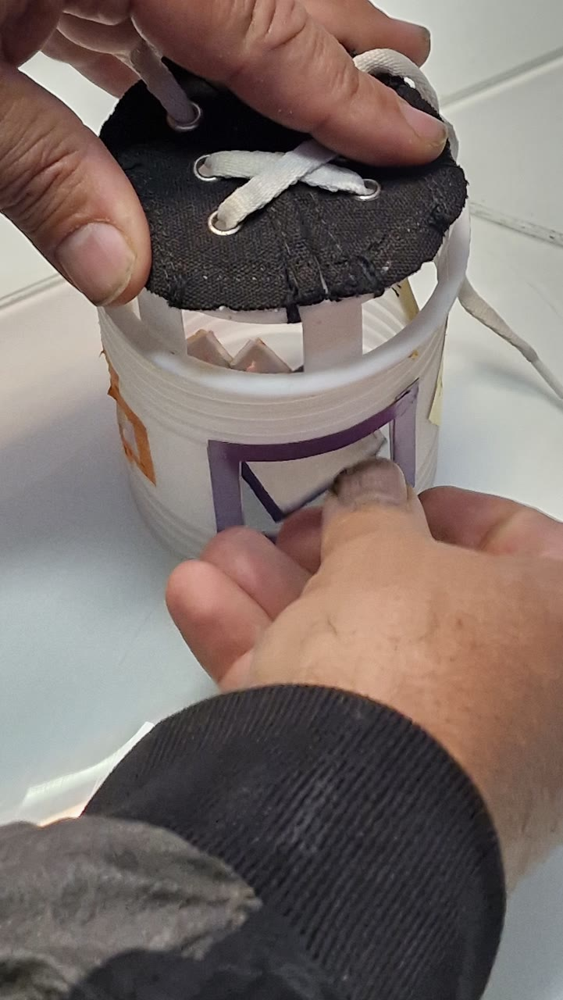

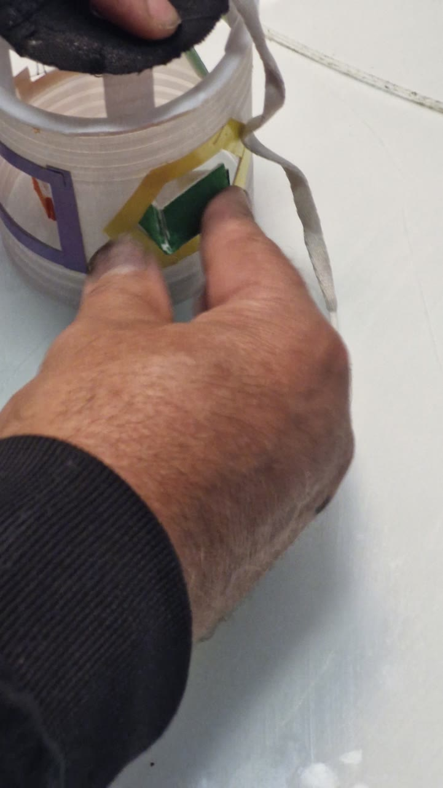

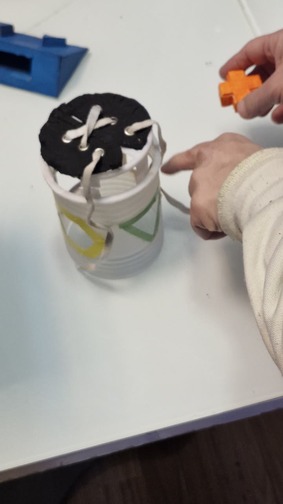

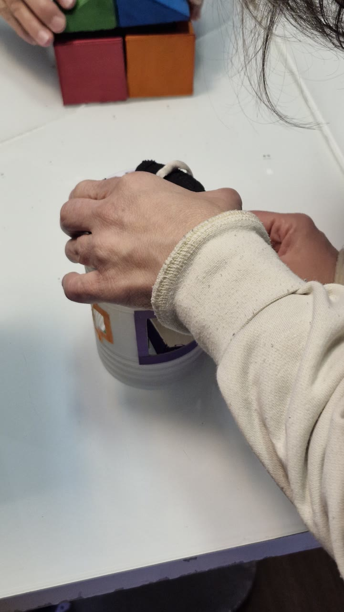
Ista ruka, ostale nedelje
- edukativna nedelja 5 · 3 slike
- edukativna nedelja 3 · 2 slike